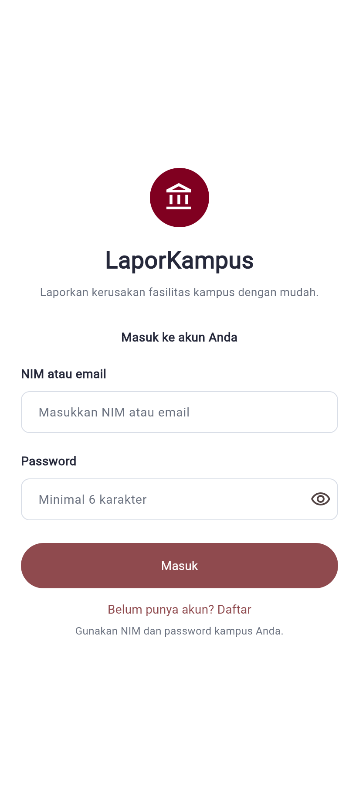
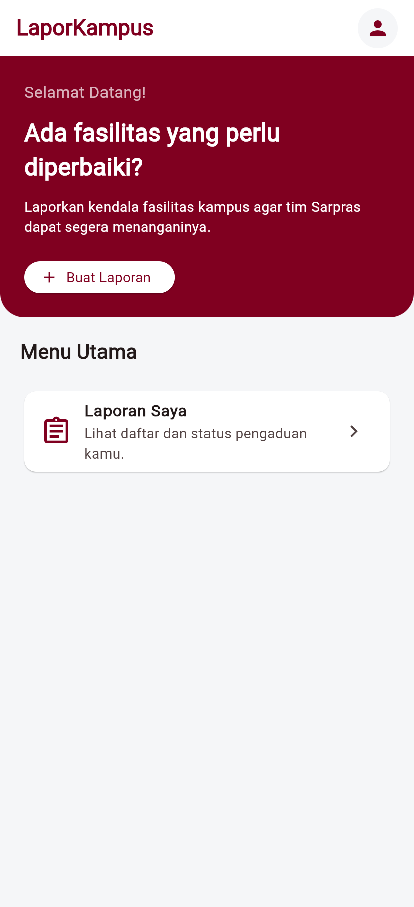
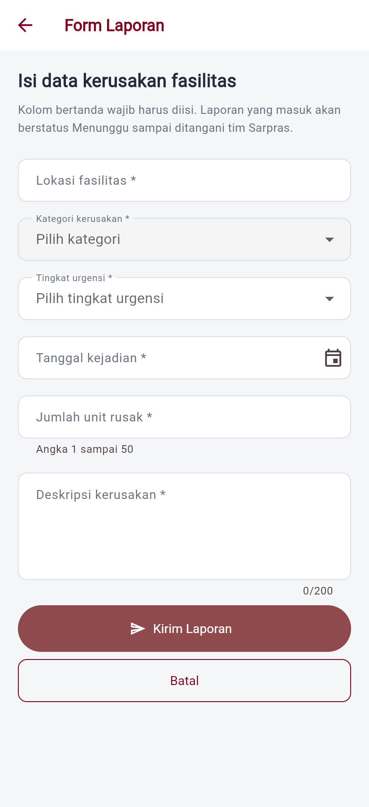
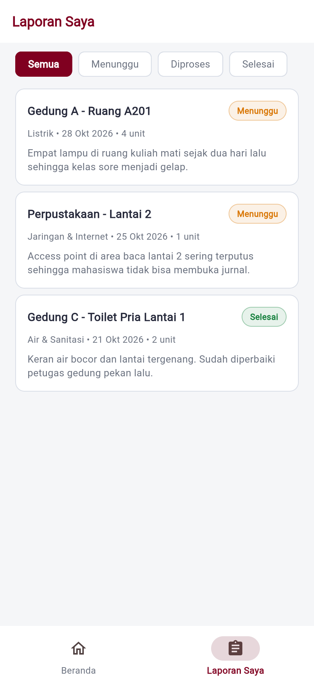

| Nama | Wahyu Hari Santosa |
| NIM | 23.01.55.0003 |
| Kelas | A1 |
| Mata kuliah | Mobile and Web Application Development |
| Semester | Ganjil 2026/2027 |
| Dosen pengampu | Jeffri Alfa Razaq & Dwi Budi Santoso |
| Repository | github.com/wahyuharis03/laporkampus |
| Desain Figma | Figma Make — wireframe Minggu 4 (tautan pada bagian 5) |



Tangkapan layar aplikasi yang berjalan (Flutter Web, Chrome). Data pada layar adalah data simulasi.
Problem statement
Mahasiswa mengalami kesulitan menyampaikan dan memantau pengaduan kerusakan fasilitas kampus ketika menemukan fasilitas yang rusak atau bermasalah. Akibatnya, laporan sulit dicatat dan statusnya sulit diketahui.
Keluhan tentang fasilitas kampus umumnya berpindah lewat grup chat angkatan, pesan pribadi ke pengurus, atau disampaikan lisan saat bertemu petugas. Tidak ada satu tempat yang menampung seluruh laporan, sehingga laporan yang sudah masuk sulit dihitung dan yang belum ditangani sulit ditemukan.
Bagi mahasiswa, masalah kedua adalah ketiadaan status. Setelah melapor, ia tidak tahu apakah laporannya sudah dibaca, sedang dikerjakan, atau selesai. Ketidakpastian ini membuat laporan dikirim berulang kali melalui saluran yang berbeda. Bagi tim Sarpras, informasi yang masuk tidak seragam: ada yang menulis lokasi secara umum, ada yang menyebut ruang secara spesifik, dan tingkat kerusakannya pun tidak terukur. Akibatnya prioritas penanganan sulit ditentukan.
| # | Gejala | Penjelasan |
|---|---|---|
| 1 | Kanal tersebar | Laporan berpindah lewat grup chat, lisan, dan pesan pribadi, sehingga tidak terkumpul di satu tempat. |
| 2 | Status tak terlihat | Mahasiswa tidak tahu laporannya sudah dibaca, sedang ditangani, atau selesai. |
| 3 | Informasi tidak seragam | Lokasi dan jenis kerusakan ditulis dengan cara berbeda, sehingga sulit ditindaklanjuti. |
| 4 | Riwayat tidak tersimpan | Tidak ada catatan yang bisa ditelusuri kembali ketika masalah yang sama terulang. |
Catatan kejujuran data
Empat gejala di atas adalah penjelasan awal yang disusun dari pengamatan sehari-hari, bukan hasil wawancara atau observasi lapangan. Validasi ke pengguna dan tim Sarpras direncanakan setelah UTS. Karena itu aplikasi ini diposisikan sebagai purwarupa alur, bukan solusi yang sudah terbukti.
Fasilitas yang rusak dan tidak tercatat membuat kegiatan perkuliahan terganggu: ruang kelas gelap, jaringan terputus, atau kursi yang tidak aman dipakai. Dengan satu kanal pencatatan dan status yang terbuka, mahasiswa tahu posisi laporannya dan tim Sarpras punya daftar kerja yang bisa diprioritaskan.
Proyek ini berfokus pada alur mahasiswa: masuk, melaporkan, melihat daftar, dan membuka detail laporan. Yang tidak termasuk: akun dan dashboard petugas Sarpras, notifikasi otomatis, peta lokasi, unggah foto sebagai fitur wajib, dan integrasi basis data produksi pada tahap UTS.
“Saya cuma mau lapor sekali, lalu tahu kapan diperbaiki. Tidak perlu chat dosen atau menunggu di ruang Sarpras.”
PERSONA ILUSTRATIFDisusun untuk menggambarkan pengguna utama, bukan hasil penelitian lapangan.
Rani menemukan kursi patah di ruang B105 saat menunggu kuliah. Ia melapor sambil berdiri, memakai ponsel, dan punya waktu kurang dari satu menit sebelum kelas dimulai. Ia tidak ingin mengisi formulir panjang atau membuat akun baru.
Petugas Sarpras adalah penerima laporan, tetapi belum menjadi pengguna aplikasi pada tahap ini. Perannya muncul pada rancangan Firestore sebagai pihak yang mengubah status.
Format: sebagai mahasiswa, saya ingin …, agar …. Setiap user story punya kriteria penerimaan yang dapat diuji pada purwarupa.
| ID | User story | Prioritas | Kriteria penerimaan |
|---|---|---|---|
| US-01 | Sebagai mahasiswa, saya ingin masuk memakai NIM dan password agar laporan terhubung dengan identitas saya. | Must | NIM dan password kosong ditolak dengan pesan; isian benar membuka Beranda. |
| US-02 | Sebagai mahasiswa, saya ingin melaporkan kerusakan lewat satu formulir agar tidak perlu menghubungi banyak pihak. | Must | Enam kolom wajib; isian salah ditolak dengan pesan di dekat kolom; isian benar menampilkan SnackBar hijau. |
| US-03 | Sebagai mahasiswa, saya ingin melihat daftar laporan dan statusnya agar tahu laporan mana yang belum ditangani. | Must | Laporan baru tampil di daftar; status Menunggu/Diproses/Selesai terlihat; keadaan kosong dijelaskan. |
| US-04 | Sebagai mahasiswa, saya ingin membuka detail laporan agar bisa memeriksa isi dan riwayatnya. | Should | Menekan kartu laporan membuka halaman detail berisi seluruh isian; tombol kembali bekerja. |
| US-05 | Sebagai mahasiswa, saya ingin menyaring laporan menurut status agar daftar tetap mudah dibaca. | Should | Filter Semua/Menunggu/Diproses/Selesai mengubah daftar; filter tanpa data menampilkan keadaan kosong. |
Mengapa tiga yang pertama Must? Tanpa login, identitas pelapor tidak jelas. Tanpa formulir, tidak ada data kerusakan yang bisa ditindaklanjuti. Tanpa daftar dan status, masalah “status tidak terlihat” tidak terselesaikan. US-04 dan US-05 mempercepat pemantauan, tetapi alur inti tetap berjalan tanpa keduanya.
Prioritas memakai MoSCoW. Must = tanpa ini masalah utama belum selesai. Should = penting, tetapi bukan penghalang alur inti. Could = tambahan bila waktu cukup.
| ID | Kebutuhan | Prioritas | Keterangan / status |
|---|---|---|---|
| F-01 | Login memakai NIM dan password, menolak kolom kosong | Must | Sudah berjalan (simulasi, belum Firebase Auth) |
| F-02 | Beranda menampilkan sapaan, ringkasan status, dan laporan terbaru | Must | Sudah berjalan |
| F-03 | Form laporan enam kolom dengan validasi per kolom | Must | Sudah berjalan |
| F-04 | Pesan status SnackBar: merah bila gagal, hijau bila tersimpan | Must | Sudah berjalan |
| F-05 | Daftar laporan dengan status dan keadaan kosong | Must | Sudah berjalan |
| F-06 | Detail laporan berisi seluruh isian | Should | Sudah berjalan |
| F-07 | Filter laporan menurut status | Should | Sudah berjalan |
| F-08 | Navigasi responsif: NavigationBar menjadi NavigationRail pada layar lebar | Should | Sudah berjalan |
| F-09 | Penyimpanan permanen di Cloud Firestore | Must (UAS) | Rencana Pertemuan 10 |
| F-10 | Unggah foto kerusakan | Could | Rencana Pertemuan 11 |
| F-11 | Dashboard petugas Sarpras dan perubahan status | Could | Di luar cakupan UTS |
| F-12 | Notifikasi otomatis saat status berubah | Could | Di luar cakupan UTS |
| Kolom | Jenis input | Aturan | Pesan kesalahan |
|---|---|---|---|
| Lokasi fasilitas | Teks | Wajib; minimal 5 karakter | Lokasi fasilitas wajib diisi / Lokasi minimal 5 karakter |
| Kategori kerusakan | Dropdown | Wajib dipilih (5 pilihan) | Kategori wajib dipilih |
| Tingkat urgensi | Dropdown | Wajib dipilih: Rendah, Sedang, Tinggi | Tingkat urgensi wajib dipilih |
| Tanggal kejadian | Date picker | Wajib; 30 hari terakhir sampai hari ini | Tanggal wajib diisi |
| Jumlah unit rusak | Angka | Wajib; bilangan bulat; 1–50 | Jumlah unit tidak boleh nol / Maksimal 50 unit per laporan |
| Deskripsi kerusakan | Teks panjang | Wajib; minimal 15 karakter; maksimal 200 | Deskripsi minimal 15 karakter |
Pengujian dilakukan manual pada aplikasi yang berjalan di Chrome, ditambah tujuh widget test otomatis untuk navigasi, validasi, dan tata letak layar lebar.
| # | Kasus | Masukan | Hasil yang diharapkan | Hasil |
|---|---|---|---|---|
| 1 | Semua kolom kosong | Tekan Kirim tanpa isian | Enam pesan kesalahan muncul; SnackBar merah | Sesuai |
| 2 | Lokasi terlalu pendek | “A” | “Lokasi minimal 5 karakter” | Sesuai |
| 3 | Jumlah melebihi batas | 60 | “Maksimal 50 unit per laporan” | Sesuai |
| 4 | Deskripsi terlalu pendek | “Rusak” | “Deskripsi minimal 15 karakter” | Sesuai |
| 5 | Isian valid | Lokasi, kategori, urgensi, tanggal, 2 unit, deskripsi 91 karakter | SnackBar hijau; laporan muncul di daftar | Sesuai |
Perintah flutter test menghasilkan 7 tes lulus.
Yang diuji: login dengan kolom kosong, login berhasil membuka Beranda, tampilan
NavigationRail pada layar lebar, tombol Buat Laporan membuka form,
pesan kesalahan pada form kosong, penolakan jumlah nol, dan penyimpanan laporan
valid ke daftar.
Alur utama dari login sampai proses inti selesai:
Bila validasi gagal, pengguna tetap di Form Laporan dan pesan muncul di bawah kolom yang salah; laporan tidak dikirim. Bila valid, laporan masuk ke daftar, SnackBar hijau muncul, dan pengguna kembali ke Beranda.
H1 Login Awal, di luar navigasi |
H2 Beranda Navigasi utama |
H3 Form Laporan Push dari Beranda |
H4 Laporan Saya Navigasi utama |
H5 Detail Laporan Push dari H2/H4 |
Navigasi utama memakai NavigationBar di ponsel dan berubah menjadi
NavigationRail pada lebar layar ≥ 600 px. Menu yang sama dipakai di
kedua ukuran: Beranda dan Laporan Saya. Halaman Form dan Detail dibuka dengan
Navigator.push, lalu kembali dengan pop.
| Kode | Halaman | Prioritas | Isi |
|---|---|---|---|
| H1 | Login | Must | NIM, password, validasi kolom kosong, tombol Masuk |
| H2 | Beranda | Must | Sapaan, tiga kartu ringkasan, tombol Buat Laporan, tiga laporan terbaru |
| H3 | Form Laporan | Must | Enam kolom, validasi, SnackBar, tombol Kirim dan Batal |
| H4 | Laporan Saya | Must | Filter status, daftar laporan, keadaan kosong |
| H5 | Detail Laporan | Should | Lokasi, kategori, urgensi, tanggal, jumlah unit, deskripsi, status |
Login ──pushReplacement──▶ Beranda (H2) Beranda ──push──▶ Form Laporan (H3) ──pop──▶ Beranda Beranda ──push──▶ Detail Laporan (H5) ──pop──▶ Beranda Beranda ──NavigationBar──▶ Laporan Saya (H4) Laporan Saya ──push──▶ Detail Laporan (H5) ──pop──▶ Laporan Saya
Wireframe dibuat pada Minggu 4 di Figma, mengikuti style guide mini: primer maroon
#800020, latar #F5F6F8, jarak kelipatan 8, radius 10–12,
dan tombol utama setinggi 52 px.
Tautan Figma:
figma.com/make/RiyY93QWEjZXQP93Cx6Sui
Sketsa wireframe di atas digambar ulang dari frame Figma agar dapat dicetak; versi interaktifnya ada pada tautan Figma.

Yang berubah saat implementasi hanya kepadatan teks dan ukuran kartu; susunan navigasi, hierarki, dan istilah tetap sama. Perbedaan yang disengaja: tombol “Buat Laporan” diberi ikon tambah, dan status memakai chip berwarna agar lebih cepat dibaca.
| Lapisan | Teknologi | Alasan |
|---|---|---|
| Antarmuka | Flutter + Material 3 | Satu basis kode untuk web dan Android; widget siap pakai untuk form, navigasi, dan SnackBar. |
| Bahasa | Dart | Terintegrasi dengan Flutter; null safety membantu mencegah data kosong. |
| Autentikasi | Firebase Authentication | Mengelola sesi dan identitas tanpa server sendiri; tersedia di paket Spark. |
| Basis data | Cloud Firestore | Dokumen fleksibel, realtime, dan cocok untuk daftar laporan yang berubah status. |
| Publikasi | Firebase Hosting | Menghasilkan URL yang dapat dibuka dosen tanpa memasang aplikasi. |
lib/
main.dart akar aplikasi: tema dan halaman pertama
data/data_laporan.dart model Laporan, data simulasi, helper format
pages/
login_page.dart H1 Login
halaman_utama.dart NavigationBar / NavigationRail
beranda_page.dart H2 Beranda
form_laporan_page.dart H3 Form Laporan + validasi
laporan_saya_page.dart H4 Laporan Saya + filter
detail_laporan_page.dart H5 Detail Laporan
theme/app_theme.dart palet, jarak, tema Material 3
widgets/ keadaan kosong, chip status
Pada tahap UTS, data disimpan di List<Laporan> di memori
(lib/data/data_laporan.dart). Laporan yang dikirim tampil selama
aplikasi berjalan, lalu kembali ke data simulasi setelah dimuat ulang. Pemindahan
ke Firestore dilakukan pada Pertemuan 9–10 dengan bentuk data yang sudah dirancang
pada bagian berikut.
Batas teknis yang disengaja
Firebase paket Spark (tanpa billing), autentikasi email/password (bukan OTP telepon), tanpa Cloud Functions, tanpa payment gateway, dan tanpa paket tambahan dari pub.dev. Tujuannya agar satu alur inti selesai lebih dahulu dan dapat dijelaskan keputusannya.
Struktur mengikuti kebutuhan bisnis: satu pengguna punya banyak laporan, dan satu laporan punya riwayat perubahan status. Riwayat dipisah ke subcollection agar perubahan status tidak menimpa data lama.
| Field | Tipe | Keterangan |
|---|---|---|
uid | string | ID dokumen, sama dengan Firebase Auth UID |
nim | string | Nomor induk mahasiswa, unik |
nama | string | Nama tampilan |
kelas | string | Contoh: A1 |
email | string | Email kampus |
createdAt | timestamp | Waktu pendaftaran |
| Field | Tipe | Keterangan |
|---|---|---|
pelaporUid | string | Referensi ke users.uid |
lokasi | string | Contoh: Gedung B - Ruang B105 |
kategori | string | Listrik, Air & Sanitasi, Furnitur, Jaringan & Internet, Lainnya |
urgensi | string | Rendah, Sedang, Tinggi |
tanggalKejadian | timestamp | Tanggal ditemukan, maksimal 30 hari ke belakang |
jumlahUnit | number | 1–50 |
deskripsi | string | 15–200 karakter |
status | string | Menunggu, Diproses, Selesai |
createdAt | timestamp | Waktu laporan dikirim |
updatedAt | timestamp | Waktu perubahan terakhir |
fotoUrl | string? | Opsional, diisi setelah fitur unggah foto (Pertemuan 11) |
| Field | Tipe | Keterangan |
|---|---|---|
status | string | Status baru |
oleh | string | UID petugas yang mengubah |
catatan | string | Alasan atau tindakan yang dilakukan |
waktu | timestamp | Waktu perubahan |
laporan/8fK2mQ... pelaporUid : "u_23_01_55_0003" lokasi : "Gedung B - Ruang B105" kategori : "Furnitur" urgensi : "Sedang" tanggalKejadian : 3 November 2026 08:15 jumlahUnit : 2 deskripsi : "Dua kursi patah pada sandaran..." status : "Menunggu" createdAt : 3 November 2026 08:20 updatedAt : 3 November 2026 08:20
| Keperluan | Query |
|---|---|
| Daftar laporan milik mahasiswa | where pelaporUid == uid orderBy createdAt desc |
| Daftar laporan menurut status (petugas) | where status == "Menunggu" orderBy createdAt asc |
| Detail laporan | doc(laporan/{id}) |
| Riwayat status | collection(laporan/{id}/riwayatStatus) orderBy waktu asc |
match /laporan/{id} {
allow read: if request.auth.uid == resource.data.pelaporUid;
allow create: if request.auth.uid == request.resource.data.pelaporUid
&& request.resource.data.status == "Menunggu";
allow update: if request.auth.token.peran == "sarpras";
allow delete: if false;
}
match /users/{uid} {
allow read, write: if request.auth.uid == uid;
}
Mahasiswa hanya dapat membaca dan membuat laporannya sendiri. Perubahan status
hanya untuk petugas Sarpras melalui klaim peran. Penghapusan data
tidak dibuka lewat aplikasi.
| Pertemuan | Fokus | Luaran |
|---|---|---|
| 9 | Firebase Authentication | Login nyata dengan email/password; sesi tersimpan; halaman login terhubung. |
| 10 | Cloud Firestore | Laporan tersimpan permanen; daftar dibaca dari koleksi; status dari dokumen. |
| 11 | Unggah foto | Foto kerusakan opsional tersimpan di Storage dan URL-nya masuk ke dokumen laporan. |
| 12 | Hosting | Aplikasi web dapat dibuka lewat tautan; diuji di ponsel dan desktop. |
| 13 | Pengujian | Widget test dan uji manual alur utama; perbaikan bug. |
| 14 | Penyempurnaan | Keadaan memuat, penanganan galat jaringan, dan konsistensi istilah. |
| 15 | Demo UAS | Alur lengkap dengan data Firestore dan penjelasan keputusan teknis. |
| Kendala | Penanganan |
|---|---|
| Validasi harus konsisten dengan user story | Aturan ditulis lebih dahulu sebagai tabel, lalu diterjemahkan menjadi validator di form_laporan_page.dart. |
| Tanggal kejadian dibatasi 30 hari | Memakai showDatePicker dengan firstDate dan lastDate, sehingga pengguna tidak bisa memilih di luar rentang. |
| Data hilang saat aplikasi dimuat ulang | Disadari sebagai batas tahap UTS; ditulis di halaman detail dan README, lalu diselesaikan pada Pertemuan 10. |
| Label status di kode dan rancangan sempat berbeda | Diseragamkan menjadi Menunggu, Diproses, Selesai di seluruh aplikasi dan dokumen. |
LaporKampus memusatkan pencatatan dan pemantauan pengaduan fasilitas kampus dalam satu alur: masuk, melaporkan lewat formulir tervalidasi, melihat daftar, dan membuka detail. Purwarupa ini sudah berjalan di Chrome dengan data simulasi; rancangan Firestore dan rencana Pertemuan 9–15 menjadi dasar pengembangan berikutnya.
Masukan pada UTS akan dipakai untuk memperbaiki alur, istilah, dan prioritas fitur sebelum fase implementasi menuju UAS.